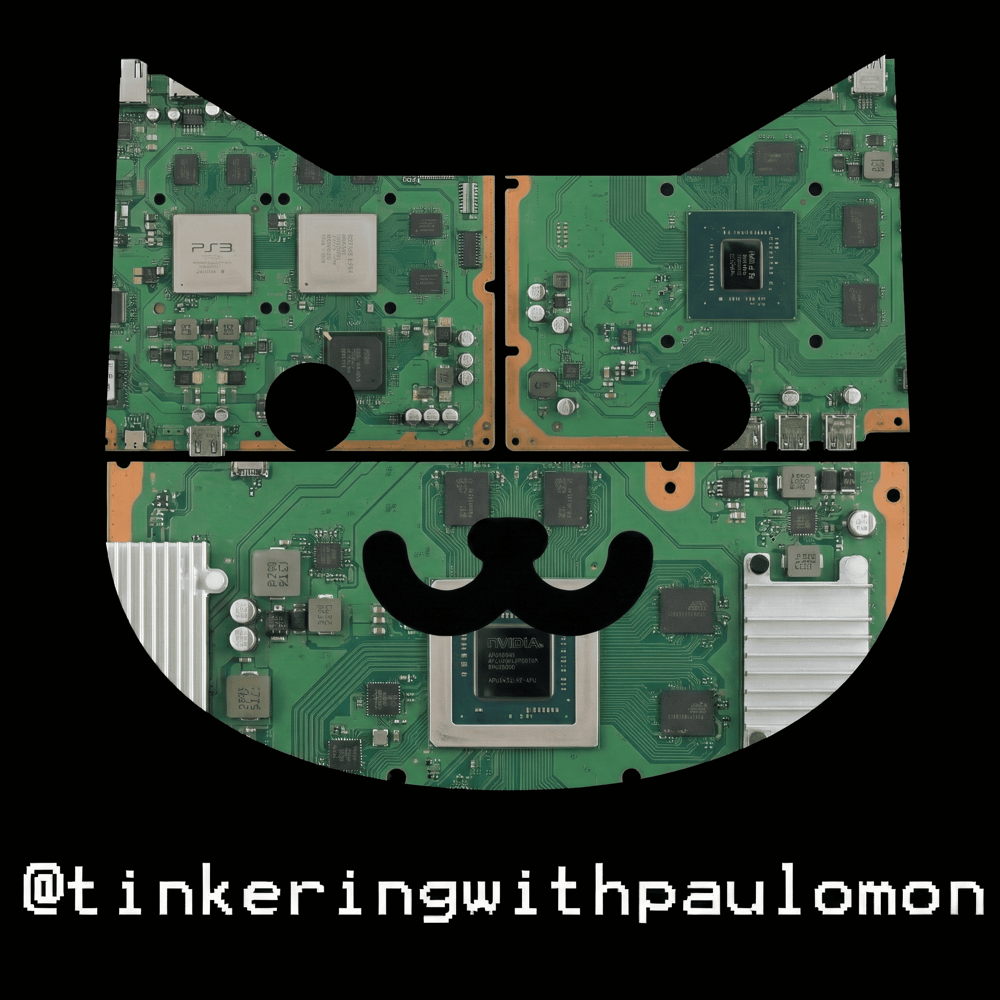

Paulomon's AIO Site
All credits goes to the ps4 scene.
Platform:
PS4
Firmware:
...
Exploit Chain:
Relapse
Payload:
GoldHEN
Status:
Initializing
PS4 Browser Notice
If the exploit stalls or fails repeatedly, press the
PS button
→
Close Window
→ Re-open Browser to reset WebKit memory.
Status